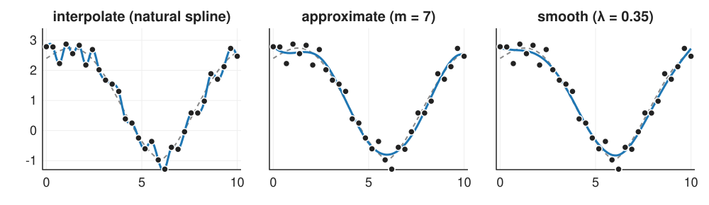
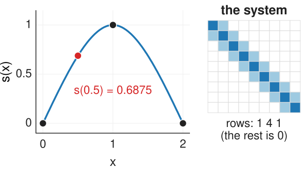
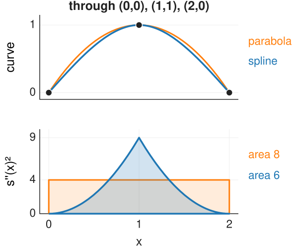
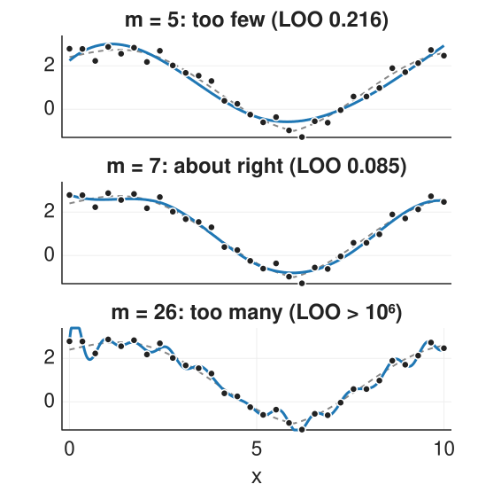
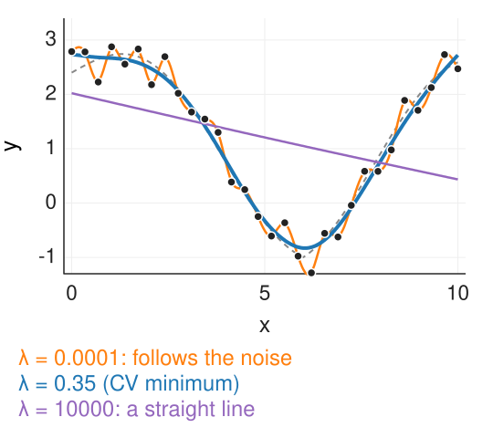
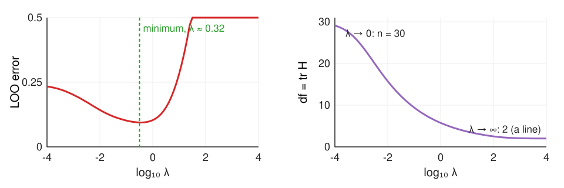
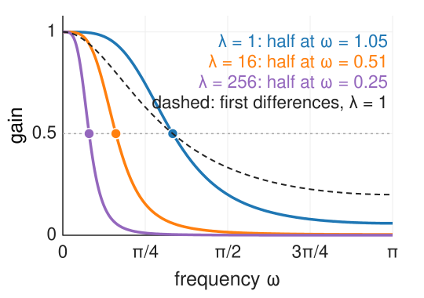
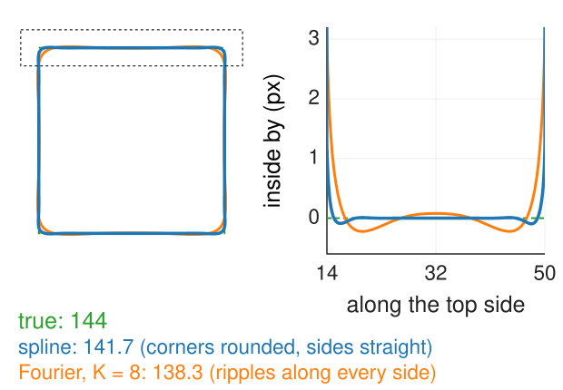

Interpolating, approximating and smoothing splines
Image analysis
About this lecture
Units 1 and 2 placed control points by hand. Now the points are data, often noisy, and the spline must be fitted.
Interpolate: through every point; a banded linear system; the natural spline bends least.
Approximate: fewer control points than data, least squares.
Smooth: one parameter per datum, but penalise bending: data + λ·penalty, the regularisation pattern for curves.
Choosing λ by leave-one-out cross-validation; the smoothing spline as a low-pass filter.
Outlines: fit a closed spline to boundary pixels; read length and curvature from it.
Slides titled The math give the formulas and proofs; the ideas are complete without them.
Three ways to fit the same data

Interpolate: passes through every point, so it follows the noise too.
Approximate with 7 control points: smooth, but the number of control points sets the smoothness in steps.
Smooth: a control value per point, but bending costs; λ sets the smoothness continuously.
Dashed: the true curve the samples came from.
Interpolating splines
Through n points with a cubic spline that is C² at every point:
Each point gives one equation, and each equation involves only the point and its two neighbours: a tridiagonal (banded) linear system, solved in O(n) operations.
Two conditions are missing at the ends. The natural spline sets the curvature to zero at both ends (the curve continues as a straight line).
In B-spline form on uniform knots: control values c_i with \tfrac16(c_{i-1} + 4c_i + c_{i+1}) = y_i, the same tridiagonal shape (unit 4 uses it on images).
By hand: through (0, 0), (1, 1), (2, 0) the natural spline is s(x) = 1.5x - 0.5x^3 on [0, 1] (and mirrored): s(0.5) = 0.6875.

The math: the natural cubic spline system
Unknowns: the second derivatives M_i = s''(x_i) at the nodes. On each interval s'' is linear between M_i and M_{i+1}; integrating twice and matching the values gives the piece. C¹ at the interior nodes gives, for uniform spacing h, M_{i-1} + 4M_i + M_{i+1} = \frac{6}{h^2}\big(y_{i-1} - 2y_i + y_{i+1}\big),\qquad M_0 = M_{n-1} = 0.
Worked example (h = 1, y = 0, 1, 0): 4M_1 = 6(0 - 2 + 0), M_1 = -3.
Diagonally dominant (4 > 1 + 1): the Thomas algorithm (Gaussian elimination without pivoting) solves it in O(n).
The smoothest curve through the points
A spline was a thin wooden strip that draftsmen held in place with lead weights at the points: it takes the shape of least bending energy.
The natural cubic spline is exactly that: among all smooth curves through the points it has the smallest bending \int s''(x)^2\,dx (Holladay, 1957).
By hand through (0, 0), (1, 1), (2, 0): the spline has s'' = -3x on [0, 1], bending 2\int_0^1 9x^2\,dx = 6. The parabola 2x - x^2 through the same points has s'' = -2: bending \int_0^2 4\,dx = 8.
At x = 0.5: spline 0.6875, parabola 0.75.
So “interpolating spline” is not an arbitrary choice: it is the answer to “bend as little as possible”.

The math: minimum bending
Let g be any C² function through the same points, s the natural spline, e = g - s (zero at every node). Then \int g''^2 = \int s''^2 + \int e''^2 + 2\int s''e''.
Integrate the cross term by parts on each interval [x_i, x_{i+1}]: \int s''e'' = \big[s''e'\big] - \int s'''e' = \big[s''e'\big] - s'''\big|_{(x_i, x_{i+1})}\big[e\big]_{x_i}^{x_{i+1}} = \big[s''e'\big]. (s''' is constant on each interval and e vanishes at the nodes.) Summed over the intervals the boundary terms telescope to s''(x_{n-1})e'(x_{n-1}) - s''(x_0)e'(x_0) = 0 by the natural end conditions. Hence \int g''^2 = \int s''^2 + \int e''^2 \ge \int s''^2, with equality only for g = s. Example: 8 = 6 + 2.
Approximating splines: fewer control points
Noisy data should not be interpolated. First fix: use fewer control points than data, m < n, and fit by least squares.
The curve is f(x) = \sum_j c_j N_j(x); each datum gives one equation f(x_i) \approx y_i. More equations than unknowns: minimise \sum_i (y_i - f(x_i))^2 (the normal equations of linear algebra, B^\top B\mathbf{c} = B^\top\mathbf{y}).
m controls the smoothness in steps: too few control points cannot follow the curve (underfit); too many follow the noise and, where knots crowd the data, become unstable.
Where the knots go matters: a kink between two knots cannot be followed.

Smoothing splines: data + λ · bending
Second fix: keep one value per datum, but charge for bending: \text{minimise}\quad \sum_i \big(y_i - f(x_i)\big)^2 + \lambda\int f''(x)^2\,dx.
This is the pattern of the regularisation unit: data misfit + λ·penalty, with the bending energy as the penalty.
λ = 0: the interpolating (natural) spline; it follows the noise.
λ → ∞: no bending allowed: the least-squares straight line (bending 0 costs nothing).
In between: a smooth curve; λ moves continuously between the two.
Discrete version by hand: three data (0, 3, 0), penalty λ·(second difference)²: λ = 0 gives (0, 3, 0), λ = 1 gives (0.857, 1.286, 0.857), λ → ∞ gives (1, 1, 1). The mean (1) is kept.

The math: penalised least squares
Write the fit in a basis, \mathbf{f} = B\mathbf{c} (values at the data), and the penalty as a quadratic form \mathbf{c}^\top P\mathbf{c} (P = the bending Gram matrix \int N_j''N_k'', or D^\top D with D the second-difference matrix: P-splines). Minimising \|\mathbf{y} - B\mathbf{c}\|^2 + \lambda\,\mathbf{c}^\top P\mathbf{c}\quad\Rightarrow\quad (B^\top B + \lambda P)\,\mathbf{c} = B^\top\mathbf{y}.
Banded matrices: solved in O(n).
Discrete example (B = I, D = [1\;{-2}\;1]): (I + \lambda D^\top D)\mathbf{f} = \mathbf{y}; with λ = 1 and \mathbf{y} = (0, 3, 0): \mathbf{f} = (\tfrac67, \tfrac97, \tfrac67). D\mathbf{1} = 0 and the rows of D^\top D sum to 0, so the sum of \mathbf{f} equals the sum of \mathbf{y}.
The fit is linear in the data: \hat{\mathbf{f}} = H(\lambda)\,\mathbf{y}, the hat matrix. Its trace is the effective number of parameters: n at λ = 0, 2 as λ → ∞.
Try it: interpolate, approximate, smooth
Choosing λ
By eye: fine for a figure, not for a measurement.
By the noise level (the discrepancy principle): choose λ so that the residuals are as large as the noise.
Leave-one-out cross-validation: hide each point in turn, fit without it, predict it; average the squared prediction errors. Too small λ: the fit chases noise and predicts badly; too large: it misses the shape. A U-shaped curve with a minimum.

The effective number of parameters goes from 30 (interpolation) to 2 (a line); at the minimum about 7.
The math: leave-one-out without refitting
For any linear smoother \hat{\mathbf{f}} = H\mathbf{y} whose leave-one-out fit is the full fit with y_i replaced by its own prediction (true for smoothing splines and least-squares fits), y_i - \hat f^{(-i)}(x_i) = \frac{y_i - \hat f_i}{1 - H_{ii}},\qquad \text{LOO}(\lambda) = \frac1n\sum_i\left(\frac{y_i - \hat f_i}{1 - H_{ii}}\right)^2.
One fit per λ instead of n, and exact, not an approximation.
GCV replaces each H_{ii} by the average \operatorname{tr}H/n: \text{GCV} = \frac{n\sum_i(y_i - \hat f_i)^2}{(n - \operatorname{tr}H)^2}.
H_{ii} near 1 (a point that the fit must follow, e.g. an isolated sample far from others) makes the denominator small: such points dominate the score.
A smoothing spline is a low-pass filter
On equally spaced data far from the ends, a smoothing spline acts like a convolution with a fixed bell-shaped kernel (Fourier unit: smoothing = keeping low frequencies).
Slow waves pass almost unchanged; fast ones (noise) are damped.
The cut-off frequency falls as \lambda^{1/4}: 16 times more λ halves the cut-off (the kernel gets twice as wide).
First differences instead of second (quadratic smoothing on a grid) penalise slope, not bending: they pull towards a constant, not towards a line.

The math: the equivalent filter
Discrete smoother on an infinite uniform grid: (I + \lambda D^\top D)\mathbf{f} = \mathbf{y}. A wave y_k = e^{i\omega k} is an eigenvector of the second difference: (D\mathbf{y})_k = (e^{i\omega} - 2 + e^{-i\omega})y_k = -(2 - 2\cos\omega)\,y_k. Hence \hat f = \frac{1}{1 + \lambda(2 - 2\cos\omega)^2}\;\hat y.
λ = 1: 0.74 at \omega = \pi/4, 0.20 at \pi/2, 0.06 at \pi.
Half power where \lambda(2 - 2\cos\omega)^2 = 1; for small \omega, 2 - 2\cos\omega \approx \omega^2, so \omega_{1/2} \approx \lambda^{-1/4} (λ = 1, 16, 256: 1.05, 0.51, 0.25).
The first-difference version (gmrf/) has 1/(1 + \lambda(2 - 2\cos\omega)): cut-off \propto \lambda^{-1/2}.
Smooth outlines from pixels
A segmented object’s boundary is a staircase of pixel edges. Its length is not the object’s perimeter:
Edge count: a digital disc of radius r has exactly 8r edges whatever its resolution (the staircase’s horizontal and vertical runs add up to the bounding box): 8r / 2\pi r = 4/\pi, 27 % too long for every disc (recall the perimeter bias in shape features).
Fit a closed smoothing spline through the midpoints of the boundary edges. Its length is an integral of its speed, its curvature a formula of its derivatives: exact for the curve, no counting.
The math: length and curvature of the fitted curve
For the closed fit \mathbf{C}(t) = \sum_j \mathbf{c}_j\beta^3(t - j) (indices modulo m):
LengthL = \oint\|\mathbf{C}'(t)\|\,dt, computed per span with Gauss–Legendre quadrature (5 points per half span: exact enough for a smooth integrand).
Curvature\kappa = \frac{x'y'' - y'x''}{(x'^2 + y'^2)^{3/2}} from the derivatives of the B-spline (unit 1 and 2).
Check: a simple closed curve turns exactly once, \oint\kappa\,ds = \oint\frac{x'y'' - y'x''}{x'^2 + y'^2}\,dt = 2\pi; for a circle of radius r: \kappa = 1/r times length 2\pi r.
The fit: data points \mathbf{p}_i at parameters t_i (chord length), minimise \sum_i\|\mathbf{p}_i - \mathbf{C}(t_i)\|^2 + \lambda\sum_j\|\mathbf{c}_{j-1} - 2\mathbf{c}_j + \mathbf{c}_{j+1}\|^2: the penalised normal equations, once for x and once for y.
Try it: outlines, length and curvature
Spline or Fourier descriptors?
Shape features smooth an outline by keeping only its lowest Fourier descriptors (the first K frequencies of x(t) + iy(t)).
Fourier terms are global: each is a wave around the whole outline. A sharp corner needs high frequencies; truncating them makes the outline ring along all sides (the Gibbs effect), and smoothing more changes the shape everywhere.
Spline bumps are local: smoothing rounds the corner and leaves straight sides straight.
Square of side 36: true 144, spline 141.7 (corners rounded), Fourier with K = 8: 138.3, with visible ripples.

Use Fourier descriptors to describe shapes (rotation and start-point invariance are easy); use splines to measure an outline locally (length, curvature, a neck).
Where this leads
Spline snakes (snakes elective): a snake whose unknowns are a few B-spline control points instead of 100 beads. Smoothness is built in, so the elasticity and rigidity terms can be reduced; curvature and normals are exact (unit 4).
Kymographs and growth curves: smooth a boundary position over time with a smoothing spline, then differentiate it: velocity and acceleration without amplified noise.
Images (unit 4): the interpolation system of this unit, applied to every row and column of an image.
Summary
Interpolating spline: through every point, a tridiagonal system; the natural spline is the curve of least bending through the points.
Approximating spline: m < n control points, least squares; m sets smoothness in steps, knot placement matters.
Smoothing spline: minimise misfit + λ·bending; λ = 0 interpolates, λ → ∞ gives the least-squares line; effective parameters from n to 2.
Choose λ by leave-one-out cross-validation (one fit per λ with the hat-matrix shortcut); the smoothing spline is a low-pass filter whose cut-off moves as \lambda^{-1/4}.
Outlines: fit a closed spline to the boundary edges; length and curvature come from the curve, not from counting pixels (edge count: 27 % too long for a disc). Splines are local, Fourier descriptors global.